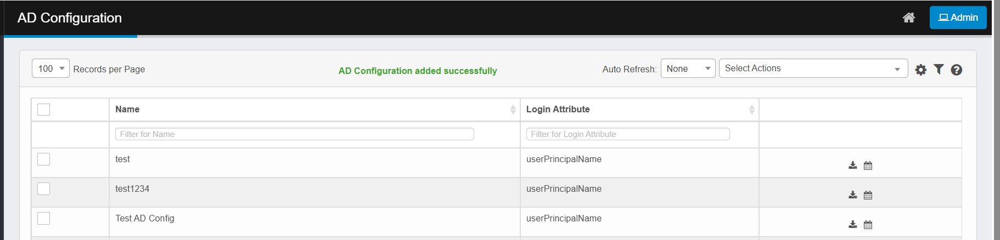

AD Configuration Property Descriptions
|
Property |
Description |
|
Name |
A user-defined name for the AD configuration. Helps identify the configuration among multiple AD setups. |
|
AD Host |
The hostname or IP address of the Active Directory server. |
|
Domain |
The domain name managed by the Active Directory server (e.g., local.virima.com). |
|
Base DN |
The Base Distinguished Name. Specifies the starting point in the directory tree for searches (e.g., dc=local,dc=virima,dc=com). |
|
Bind DN |
The Distinguished Name of the account used to bind (authenticate) to the AD server. |
|
Bind Password |
The password for the Bind DN account. Used for authentication when connecting to AD. |
|
Client |
The client or application that will use this AD configuration. |
|
Login Attribute |
The LDAP attribute used for user login (e.g.,userPrincipalName).
|
By default, the Login Attribute is set to userPrincipalName.
-
Click Next. The Map Properties tab displays.
-
Select (check) the fields that need to be imported and map their values (from the given drop down) to that of an applicable AD property.

-
Click Finish to save the AD configuration.
-
A successful message notifies the user after adding AD configuration: “AD Configuration added successfully”.

-